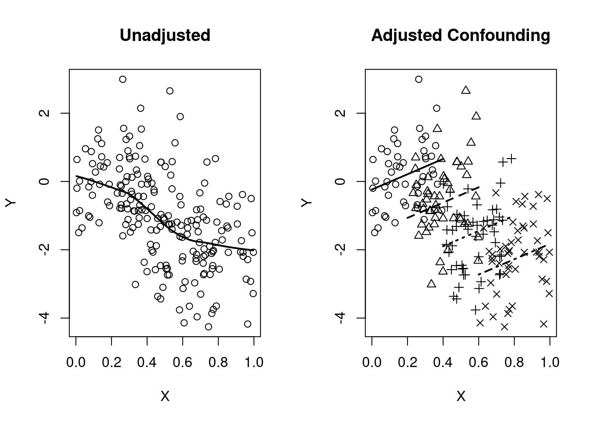
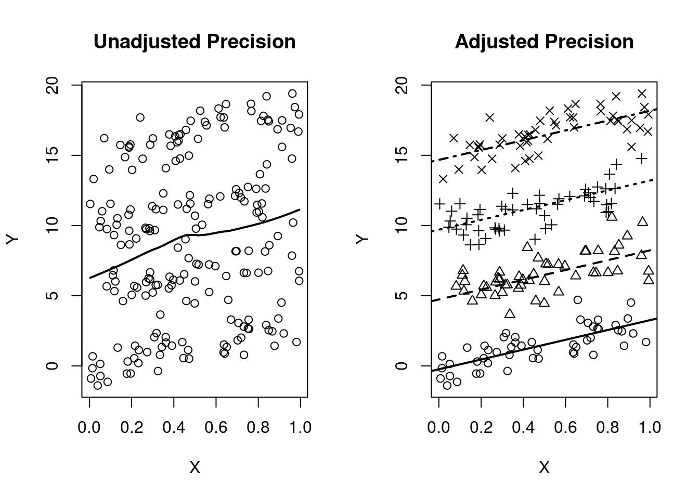

Code
library(ggplot2)
tryCatch(source('pander_registry.R'), error = function(e) invisible(e))Lecture 06
October 7, 2024
library(ggplot2)
tryCatch(source('pander_registry.R'), error = function(e) invisible(e))Most often scientific questions are translated into comparing the distribution of some response variable across groups of interest
Groups are defined by the predictor of interest (POI). Regression methods allow for either categorical or continuous predictors of interest
Categorical predictors of interest: Treatment or control, knockout or
wild type, ethnic group
Continuous predictors of interest: Age, BMI, cholesterol, blood pressure
Often we need to consider additional variables other than the predictor of interest to answer our scientific question
Covariates other than the predictor of of interest are included in the regression model as
Effect modifiers
Confounders
Mediating variables
Precision variables
(Not necessarily mutually exclusive)
The association between the Response and the Predictor of Interest differs in strata defined by the effect modifier
Statistical term: “Interaction” between the effect modifier and the POI
Choice of summary measure: mean, median, geometric mean, odds, hazard
Choice of comparisons across groups: differences, ratios
| Mean | Mean | Median | Median | |
| Women | Men | Women | Men | |
| No Smoke | 120 | 122 | 120 | 115 |
| Smoke | 133 | 122 | 133 | 124 |
| Diff | -13 | 0 | -13 | -9 |
| Ratio | 0.90 | 1 | 0.90 | 0.93 |
Effect modification by gender exists if the effect of smoking in males is different from the effect of smoking in females
Effect modification for mean, not as much for median
| Mean | Mean | Median | Median | |
| Women | Men | Women | Men | |
| No Stroke | 0.72 | 1.08 | 0.7 | 1.1 |
| Stroke | 1.01 | 1.51 | 1.0 | 1.5 |
| Diff | -0.29 | -0.43 | -0.3 | -0.4 |
| Ratio | 0.71 | 0.72 | 0.70 | 0.73 |
Effect modification for difference, not really for ratio
| Proportion | Proportion | Odds | Odds | |
| Women | Men | Women | Men | |
| No Smoke | 0.10 | 0.16 | 0.03 | 0.19 |
| Smoke | 0.16 | 0.26 | 0.19 | 0.35 |
| Diff | -0.06 | -0.10 | -0.16 | -0.16 |
| Ratio | 0.62 | 0.62 | 0.16 | 0.54 |
Proportion: No effect modification for ratio, small amount for difference
Odds: No effect modification for difference, yes for ratio
| Proportion | Proportion | Odds | Odds | |
| None | CVD | None | CVD | |
| No Smoke | 0.02 | 0.33 | 0.02 | 0.50 |
| Smoke | 0.04 | 0.50 | 0.04 | 1.00 |
| Diff | -0.02 | -0.17 | -0.02 | -0.50 |
| Ratio | 0.50 | 0.67 | 0.50 | 0.50 |
Effect Modficiation?
Proportion: Yes for ratio, yes for difference
Odds: Yes for difference, no for ratio
| Proportion | Proportion | Odds | Odds | |
| Women | Men | Women | Men | |
| No Smoke | 0.18 | 0.26 | 0.22 | 0.36 |
| Smoke | 0.05 | 0.24 | 0.05 | 0.32 |
| Diff | 0.13 | 0.02 | 0.17 | 0.03 |
| Ratio | 3.60 | 1.08 | 4.17 | 1.11 |
Effect Modfication?
Proportion: Yes for ratio, yes for difference
Odds: Yes for difference, yes for ratio
| Proportion | Proportion | Odds | Odds | |
| Women | Men | Women | Men | |
| Never Smoke | 0.16 | 0.25 | 0.19 | 0.33 |
| Ever Smoke | 0.16 | 0.26 | 0.19 | 0.35 |
| Diff | 0.00 | -0.01 | 0.00 | -0.02 |
| Ratio | 1.00 | 0.96 | 1.00 | 0.95 |
Effect Modfication?
Proportion: No for ratio, no for difference
Odds: No for difference, no for ratio
If there is an effect, will see effect modification on at least one of the difference and ratio scale
If there is no effect (example 6), will see no effect modification on both difference and ratio scale
In real world, will usually see effect modification on both scales. The real question is “Is the effect modification scientifically meaningful?”
If we find there is important effect modification, science will go forward estimating effects separately
Models with interaction terms are useful for testing if effect modification is present (statistically)
Aside: Be careful when comparing two ratios
How close are two ratios?
0.20 and 0.25 VERSUS 5.0 and 4.0?
0.10 and 0.15 VERSUS 10.0 and 6.7?
Compare the ratio of ratios, not the difference
We might consider ratios to be more different when both ratios are \(>1\) than when both are \(<1\). But, that would be wrong.
When the scientific question involves effect modification
Conduct analysis within each stratum separately
If we want to estimate the degree of effect modification or test its existence, use a regression model including
Predictor of interest (main effect)
Effect modifying variable (main effect)
A covariate modeling the interaction (usually a product)
By design or mistake, we sometimes do not model effect modification
Might perform
Unadjusted analysis: POI only
Adjusted analysis: POI and third variable, but no interaction term
If effect modification exists, an unadjusted analysis will give different results according to the association between the POI and effect modifier in the sample
If the POI and the effect modifier are not associated
Unadjusted analysis tends toward an (approximate) weighted average of the stratum specific effects
With means, exactly a weighted average
With odds and hazards, an approximate weighted average (because they are non-linear functions of the mean)
If the POI and the effect modifier are associated in the sample
If effect modification exists, an analysis adjusting only for the third variable (but no interaction) will tend toward a weighted average of the stratum specific effects
Confounding has its roots in Simpson’s Paradox
Given binary variables \(Y\) (response), \(X\) (POI), and \(Z\) (strata) it is possible to have …
\[\textrm{Pr}(Y=1 | X=1, Z=1) > \textrm{Pr}(Y=1 | X=0, Z=1)\] \[\textrm{Pr}(Y=1 | X=1, Z=0) > \textrm{Pr}(Y=1 | X=0, Z=0)\]
… but to also have …
\[\textrm{Pr}(Y=1 | X=1) < \textrm{Pr}(Y=1 | X=0)\]
| Overall | Died | Survived | Death Rate |
|---|---|---|---|
| Hospital A | 16 | 784 | 2.0% |
| Hospital B | 63 | 2037 | 3.0% |
| Good Condition | Died | Survived | Death Rate |
|---|---|---|---|
| Hospital A | 8 | 592 | 1.3% |
| Hospital B | 6 | 594 | 1.0% |
| Poor Condition | Died | Survived | Death Rate |
|---|---|---|---|
| Hospital A | 8 | 192 | 4.0% |
| Hospital B | 57 | 1443 | 3.8% |
Ignoring condition, Hospital B has a higher death rather. However, within both poor and good condition, Hospital B has a lower death rate.
The association between a predictor of interest and the response is confounded by a third variable if
The third variable is associated with the predictor of interest in the sample, AND
The third variable is associated with the response
Causally (in truth)
In groups that are homogeneous with respect to the predictor of interest
Not in the causal pathway of interest
We must consider our belief about the causal relationships among the measured variables
There is no statistical test for causality
Inference about causation comes only from the study design
BUT, consideration of the causal relationships helps us to decide which statistical questions to answer
Classic confounder
flowchart LR X[Predictor\nof interest] -- Causal? --> Y[Outcome] X[Predictor\nof interest] <-- Association --> Z[Confounder] Z[Confounder] -- Causal --> Y[Outcome]
flowchart LR X[Ice Cream] -- Causal? --> Y[Murder Rate] X[Ice Cream] <-- Association --> Z[Air temperature] Z[Air temperature] -- Causal --> Y[Murder Rate]
Not a confounder, so we would not adjust for such a variable
If we did adjust, we would lose ability to detect associations between the POI and the outcome
Example: Second hand smoke (POI), stunted growth (confounder), FEV1 (outcome)
Scientific question is about the impact of smoking on lung function
flowchart LR X[Second hand smoke] --> Y[FEV1] X[Second hand smoke] --> Z[Stuntend growth] Z[Stunted growth] --> Y[FEV1]
flowchart LR X[Work stress] --> W[Hormonal Effects] X[Work Stress] --> Z[Alcholism] W[Hormonal Effects] --> Y[Ulcers] Z[Alcholism] --> Y[Ulcers]
Adjustment for a surrogate is a bad idea
As the name implies, surrogates are a substitute for the response variable
Directed Acyclyic Graph where forced vital capacity (FVC) is a surrogate for forced exp
flowchart LR X[Second hand smoke] --> Z[FVC] Z[FVC] --> Y[FEV1]
Confounding typically produces a difference between unadjusted and adjusted analyses
This symptom is not proof of confounding
Such a difference can occur when there is no confounding
Symptom is more indicative of confounding when modeling means (linear regression) than when modeling odds (logistic regression) or hazards (Cox, proportional hazards regression)
Estimates of association from unadjusted analysis are markedly different from estimates of association from adjusted analysis
In linear regression, differences between adjusted and unadjusted analyses are diagnostic of confounding
Precision variables tend to change standard errors, but not slope estimates
Effect modification would show differences between adjusted analysis and unadjusted analysis, but would also show different associations in the strata
More difficult to diagnosis confounding with non-linear functions of the mean
Common non-linear functions: Odds (odds ratios), hazards (hazard ratios)
May show the symptoms of confounding when confounding is not present
Adjusting for precision variables can appear to be confounding
In logistic and PH regression, difference between adjusted and unadjusted analyses are more difficult to judge
Example: Suppose you have a sample where 50% of the subjects die
What is the variability? \(p*(1-p)=0.25\)
We can reduce this variability by changing \(p\), the probability of death
Estimate \(p\) in different stratum. One stratum may have a higher \(p\), another a lower \(p\).
By making the estimate more precise, we have also impacted the mean
A mediating variable is a predictor hypothesized to lie on the causal pathway between a predictor of interest and the outcome
Whether or not to adjust for a mediating variable depends on the scientific question of interest
Without adjustment, we are estimating the total (causal) effect of the predictor of interest via all pathways on the outcome
If we adjust for a mediator, we are estimating the direct (causal) effect via other pathways that do not involve the mediator
If a potential mediator is identified a priori on scientific grounds, we can estimate the direct effect via pathways other than the mediator, the indirect effect through the mediator, and the degree of mediation (e.g. proportion mediated).
Example: Depression (predictor) and Crohn’s Disease activitity (outcome) with possible mediators being physical activity, smoking, and sleep quality
Mediation models were considered using baseline, 6-month, and 12-month follow-up data
Depression at baseline was the predictor of interest, mediators were assessed at 6 months, and disease activity at 12 months was the outcome.
To establish and estimate the mediation effect, we utilized the four steps originally outlined by Barron and Kenny 1
First, we tested that there was a significant effect of depression at baseline with disease activity at 12 months to establish there was an effect to be mediated
Second, we estimated the correlation between depression at baseline and each of the potential mediators measured at 6 months
Third, we tested if each of the mediators at 6 months was associated with disease activity at 12 months while controlling for disease activity at baseline.
Fourth, the mediation package in R was used to estimate various quantities for causal mediation analysis, including average causal mediation effects (indirect effect), average direct effects, proportions mediated, and total effect. This step involves combining estimates from the mediator model (mediator at 6 months outcome, depression at baseline the predictor) and estimates from the outcome model (disease activity at 12 months outcome, mediator at 6 months and depression at baseline as predictors of interest, and controlling for disease activity at baseline) efficiently and with appropriate standard error estimates.
Results
1 Baron RM, Kenny DA. The moderator-mediator variable distinction in social psychological research: conceptual, strategic, and statistical considerations. J Pers Soc Psychol. 1986 Dec;51(6):1173-82. doi: 10.1037//0022-3514.51.6.1173. PMID: 3806354.
Sometimes the scientific question to be answered is chosen based on which questions can be answered most precisely
In general, questions can be answered more precisely when the within group distribution is less variable
Comparing groups that are similar with respect to other important risk factors decreases variability
The precision variability is independent of the cause of the response
If we adjust for such a variable, we tend to gain precision
Directed Acyclyic Graph:
flowchart LR X[Predictor] --> Y[Outcome] Z[Precision] --> Y[Outcome]
Independent observations where group 1 has a different mean and variance than group 2
\(\textrm{ind } Y_{ij} \sim (\mu_j, \sigma_j^2), j = 1, 2; i = 1, \ldots, n_j\)
\(n = n_1 + n_2\); \(r = n_1 / n_2\)
\(\theta = \mu_1 - \mu_2\), \(\hat{\theta} = \overline{Y}_1 - \overline{Y}_2\)
\(V = (r+1)(\frac{\sigma_1^2}{r} + \sigma_2^2)\)
\(se(\hat{\theta}) = \sqrt{\frac{V}{n}} = \sqrt{\frac{\sigma_1^2}{n_1} + \frac{\sigma_2^2}{n_2}}\)
Might control for some variable in order to decrease the within group variability
Restrict population sampled
Standardize ancillary treatments
Standardize measurement procedure
Independent continuous outcome associated with covariate (\(X\))
\(\textrm{ind } Y_i | X_i ~ \sim(\beta_0 + \beta_1 X_i, \sigma^2_{Y|X}), i = 1, \ldots, n\)
\(\theta = \beta_1, \hat{\theta} = \hat{\beta_1}\) from LS regression
\(V = \frac{\sigma^2_{Y|X}}{\textrm{Var}(X)}\)
\(se(\hat{\theta}) = \sqrt{\frac{\hat{\sigma}^2_{Y|X}}{n \hat{\textrm{Var}}(X)}}\)
Adjusting for covariates (\(W\)) decreases the within group standard deviation
Independent continuous outcome associated with covariate (\(X\)) and precision variable (\(W\))
\(\textrm{ind } Y_i | X_i, W_i ~ \sim(\beta_0 + \beta_1 X_i + \beta_2 W_i, \sigma^2_{Y|X,W}), i = 1, \ldots, n\)
\(\theta = \beta_1, \hat{\theta} = \hat{\beta_1}\) from LS regression
\(V = \frac{\sigma^2_{Y|X,W}}{\textrm{Var}(X)(1-r^2_{X,W})}\)
\(se(\hat{\theta}) = \sqrt{\frac{\hat{\sigma}^2_{Y|X,W}}{n \hat{\textrm{Var}}(X)(1-r^2_{X,W})}}\)
\(\sigma^2_{Y|X,W} = \sigma^2_{Y|X} - \beta_2^2 \textrm{Var}(W | X)\)
When analyzing proportions (means), the mean variance relationship is critical
Precision is greatest when proportion is close to 0 or 1
Greater homogeneity of groups makes results more deterministic (this is the goal, at least)
Independent binary outcomes
\(\textrm{ind } Y_{ij} \sim B(1, p_j), i = 1, \ldots, n_j; j = 1, 2\)
\(n = n_1 + n_2; r = n_1 / n_2\)
\(\theta = p_1 - p_2\), \(\hat{\theta} = \hat{p}_1 - \hat{p_2} = \overline{Y}_1 - \overline{Y}_2\)
\(\sigma^2_j = p_j(1-p_j)\)
\(V = (r+1)(\frac{\sigma_1^2}{r} + \sigma_2^2)\)
\(se(\hat{\theta}) = \sqrt{\frac{V}{n}} = \sqrt{\frac{\sigma^2_1}{n_1} + \frac{\sigma^2_2}{n_2}}\)
When analyzing odds (a nonlinear function of the mean), adjusting for precision variables results in more extreme estimates
\(\textrm{Odds} = \frac{p}{1-p}\)
Odds using average of stratum specific \(p\) is not the average of stratum specific odds
Example: Stroke by smoking (in CVD strata)
No association between smoking and CVD in the sample: 10% smokers in subjects with and without CVD
CVD (precision variable) associated with stroke (outcome)
Within each CVD stratum, the (adjusted) odds ratio for stroke by smoking is 2.0.
Overall, the unadjusted odds ratio is 1.8. That is, the unadjusted odds ratio is attenuated toward the null compared to the adjusted odds ratios
| No CVD | N | p | Odds |
|---|---|---|---|
| Smoke | 1000 | 0.04 | 0.04 |
| Non-Smoke | 10000 | 0.02 | 0.02 |
| Ratio | 2.0 |
| CVD | N | p | Odds |
|---|---|---|---|
| Smoke | 100 | 0.50 | 1.00 |
| Non-Smoke | 1000 | 0.33 | 0.50 |
| Ratio | 2.0 |
| Overall | N | p | Odds |
|---|---|---|---|
| Smoke | 1100 | 0.082 | 0.09 |
| Non-Smoke | 11000 | 0.048 | 0.05 |
| Ratio | 1.8 |
We include predictors in an analysis for a number of reasons. In order of importance…
Scientific question
Predictor of Interest
Effect Modifiers
Adjust for confounding
Gain precision
Adjustment for covariates changes the question being answered by the statistical analysis
Adjustments can be made to isolate associations that are of particular interest
When consulting with a scientist, it is often difficult to decide whether the interest in an additional covariate is due to confounding, effect modification, or precision
Often the scientific question dictates inclusion of particular predictors
Predictor of interest: The scientific parameter of interest can be modeled by multiple predictors (e.g. dummy variables, polynomials, splines)
Effect Modifiers: The scientific question relates to the detection of effect modification
Confounders: The scientific question may be state in terms of adjusting for known (or suspected) confounders
Unanticipated confounding
Some times we must explore our data to assess whether our results were confounded by some variable
Goal is to assess the “independent effect” of the predictor of interest on the outcome
Confounders
Variables (causally) predictive of the outcome, but not in the causal pathway
Best method: Think about the scientific problem beforehand (perhaps draw DAG)
Using data, often assessed in the control group
Variables associated with the predictor of interest in the sample
Detection of confounding ultimately must rely on our best knowledge about the possible scientific mechanisms
Effect of confounding: A confounder can make the association between the predictor of interest and the response variable look…
Stronger than the true association
Weaker than the true association
The complete reverse of the true association (“qualitative confounding”)
Conduct stratified analysis to distinguish between
Effect modifiers
Confounders
Precision variables
Plots most illustrative for continuous outcomes
Estimates of treatment effect differ among strata
When analyzing difference of means of continuous data, stratified smooth curves of the data are non-parallel
Graphical techniques difficult in other settings
set.seed(1231)
n <- 200
grp <- rep(c(0,1),each=n/2)
X <- runif(n)
emplot <- data.frame(grp=grp,
X=X,
Y=.1*grp + 2*X -4*grp*X + rnorm(n)
)
emplot$group <- factor(emplot$grp, levels=0:1, labels=c("Trt","Ctrl"))
ggplot(emplot, aes(x=X, y=Y)) + geom_point() + geom_smooth(se=FALSE) + theme_bw()ggplot(emplot, aes(x=X, y=Y, color=group, grp=group)) + geom_point() + geom_smooth(se=FALSE,) + theme_bw()Estimates of treatment effect the same across strata, AND
Confounder is causally associated with the response, AND
Confounder associated with the POI in the sample
When analyzing difference of means of continuous data
Stratified smooth curve of data are parallel
Distribution of POI differs across strata
Unadjusted and adjusted analyses give different estimates
set.seed(1231)
n <- 200
grp <- rep(c(0:3), each=n/4)
X <- c(runif(n/4, 0,.4), runif(n/4, 0.2,.6), runif(n/4, .4,.8), runif(n/4, .6, 1))
Y <- X - grp + rnorm(n)
par(mfrow=c(1,2))
plot(X,Y, main="Unadjusted")
lines(lowess(Y~X), lwd=2)
plot(X,Y, pch=(grp+1), main="Adjusted Confounding")
m1 <- lm(Y~X + grp)
segments(x0=0 , x1=.4, y0=coef(m1)[1] + 0*coef(m1)[2], y1=coef(m1)[1] + 0.4*coef(m1)[2], lwd=2)
segments(x0=0.2, x1=.6, y0=coef(m1)[1] + 0.2*coef(m1)[2]+ 1*coef(m1)[3], y1=coef(m1)[1] + 0.6*coef(m1)[2] + 1*coef(m1)[3], lty=2, lwd=2)
segments(x0=0.4, x1=.8, y0=coef(m1)[1] + 0.4*coef(m1)[2]+ 2*coef(m1)[3], y1=coef(m1)[1] + 0.8*coef(m1)[2] + 2*coef(m1)[3], lty=3, lwd=2)
segments(x0=0.6, x1= 1, y0=coef(m1)[1] + 0.6*coef(m1)[2]+ 3*coef(m1)[3], y1=coef(m1)[1] + 1*coef(m1)[2] + 3*coef(m1)[3], lty=4, lwd=2)
Estimates of treatment effect the same across strata, AND
Variable is causally associated with the response, AND
Variable is not associated with the POI in the sample
When analyzing difference of means of continuous data
Stratified smooth curve of data are parallel
Distribution of POI same across strata
Unadjusted and adjusted analyses give similar estimates but with smaller standard errors
set.seed(1231)
n <- 200
grp <- rep(c(0:3), each=n/4)
X <- runif(n)
Y <- 3*X + 5*grp + rnorm(n)
par(mfrow=c(1,2))
plot(X,Y, main="Unadjusted Precision")
lines(lowess(Y~X), lwd=2)
plot(X,Y, main="Adjusted Precision", pch=(grp+1))
m2 <- lm(Y~X + grp)
abline(a=coef(m2)[1], b=coef(m2)[2], lwd=2)
abline(a=coef(m2)[1] + 1*coef(m2)[3], b=(coef(m2)[2]), lty=2, lwd=2)
abline(a=coef(m2)[1] + 2*coef(m2)[3], b=(coef(m2)[2]), lty=3, lwd=2)
abline(a=coef(m2)[1] + 3*coef(m2)[3], b=(coef(m2)[2]), lty=4, lwd=2)